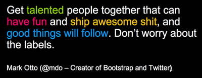

Webworker // 10+
♥ Pixeldeveloper bei Pixelpark ◘. Schon seit +10 Jahren im digitalen Geschäft.
Gewinner des "deutschen Computerspiel-Preis 2011".
Versuche Front-End-Development in ein besseres Licht zu heben, und ein Internetkind der ersten Stunden.
Erste eigene Webseite 1997, erstes Computerspiel 1987 (Bubble Bobble), erste Internetverbindung 24k-Modem.
Folgt dem Motto:
Und sonst so?
SocialMedia
Meine Facebook-ID ist noch überschaubar (579729262) und mein erster Tweet schon über 5 Jahre alt. Ich bin nicht nur technisch mit dem Facebook-SDK und den Schnitstellen von Twitter&CO vertraut, sondern berate auch gerne Unternehmen/Kunden in deren SocialMedia-Strategie und erarbeite Konzepte für Kampagnen.
Konzeption | Entwicklung | Magangement | Blogger
Technologie & Tools
Stehts darin bestrebt, die Front-End-Technologie nach vorn zu bringen. "Neu" ist nicht immer besser, dennoch sind moderne Workflows, Techniken und Tools wichtig um in kurzer Zeit, qualitative Ergebnisse zu erzielen. Dabei geht es nicht um die Trennung von Design und Enwtwicklung, vielmehr um ein gemeinsames Verständnis
JS / AngularJS | SCSS | Yeoman(Grunt/Bower)